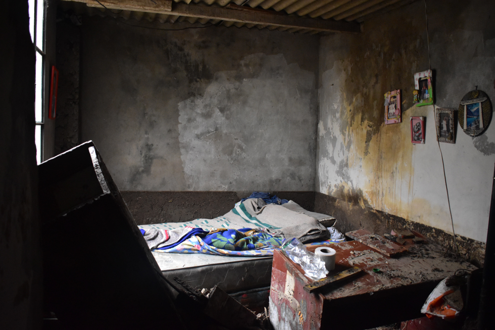
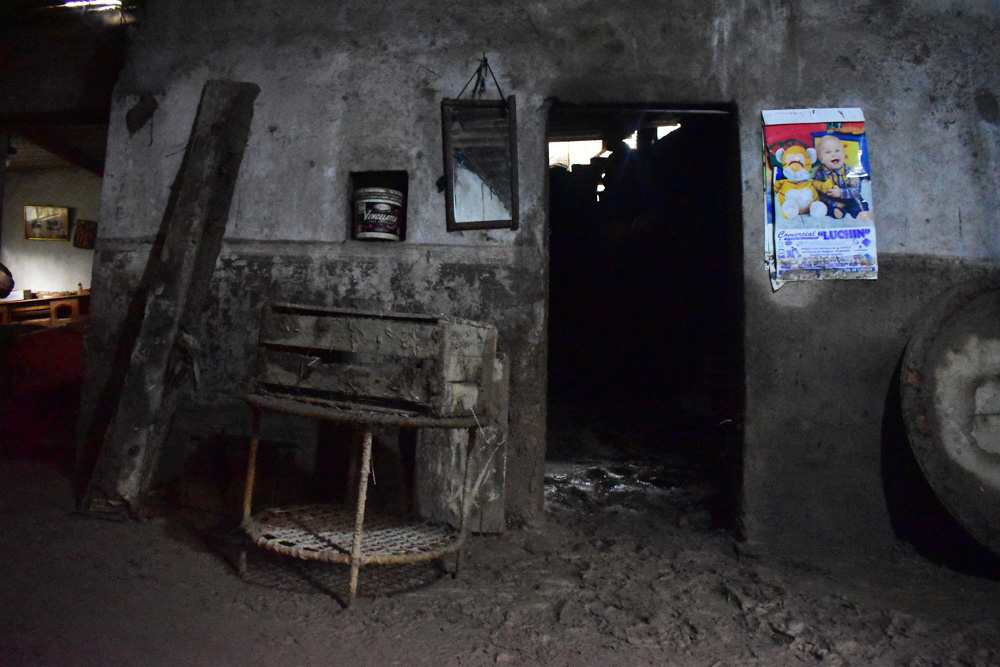
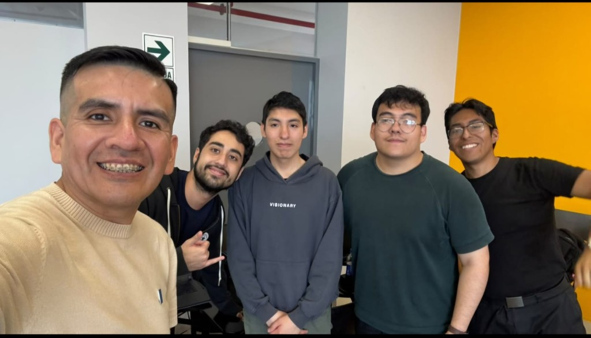

Mateo Aleman Romano
La pantalla Modo Niño. Hace visible el riesgo del día para que la familia no tenga que leer un tablero.

Clair Niño
Somos Mateo Aleman Romano, Victor Nicolas Ortiz, Ian Macavilca y Neil Andrew Quripaco. Clair Niño existe para que una familia de la costa sepa, hoy, si el calor y la humedad de su vivienda favorecen al zancudo o al golpe de calor.

Cuando El Niño calienta el mar frente al Perú, la costa norte recibe lluvias más fuertes, noches que no refrescan y agua quieta en patios y baldes. SENAMHI, INDECI y MINSA publican la alerta. En la cocina de Piura esa alerta todavía no dice qué hacer esta tarde.
El Niño costero de 2017 creció el río Piura hasta la ciudad. En 2023, con otro Niño costero y el ciclón Yaku, el dengue volvió a llenar las semanas epidemiológicas. Clair Niño nace de esa memoria: el fenómeno no termina en el mar, termina en la casa.
En 2023, con el Niño costero y el ciclón Yaku, el CDC Perú alertó de una epidemia de dengue: 72 163 casos y 79 fallecidos notificados solo hasta la semana epidemiológica 18. Fuente: CDC Perú (MINSA), 13 de mayo de 2023
Cuatro personas, cuatro piezas. Ninguna funciona sola: la lectura, la pantalla, la frase de emergencia y la historia que se cuenta afuera.
La pantalla Modo Niño. Hace visible el riesgo del día para que la familia no tenga que leer un tablero.
La alerta. Convierte humedad y calor en una frase corta, y deja un texto de respaldo si la IA no responde.
El asistente de emergencia. Responde con las guías de MINSA e INDECI, cita la fuente y, si no está ahí, lo dice.
La historia. Landing, pitch y video para que El Niño se entienda antes de abrir la aplicación.
